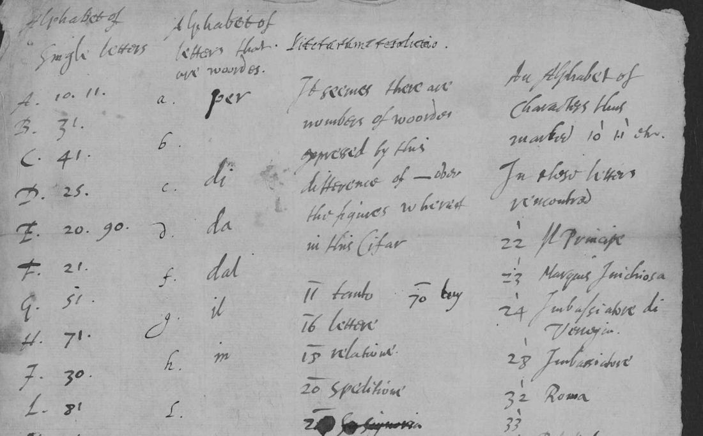
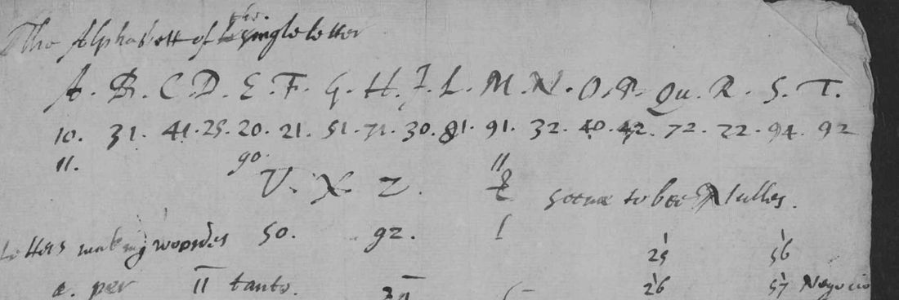
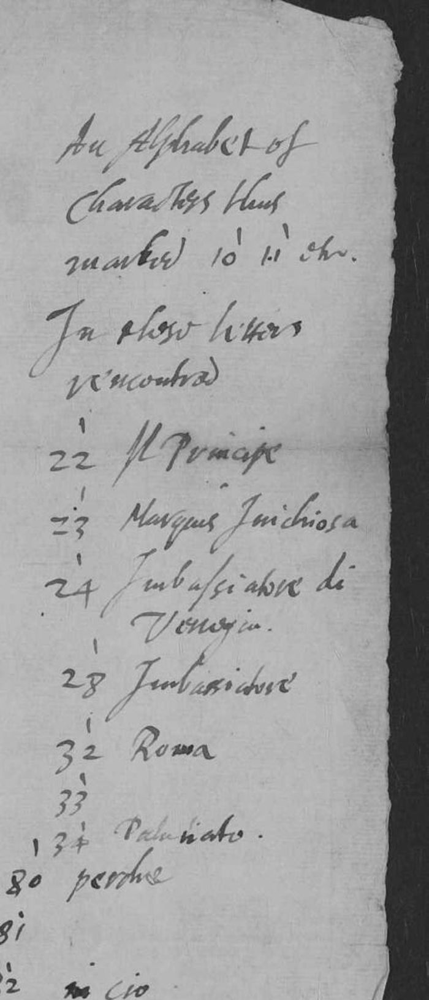

At a glanceNot solved · key sheet transcribed, worksheets not yet worked
- The document
- An English codebreaker’s key sheet, “Alphabet of Letters and Wordes”, for an Italian cipher he had broken, and nine pages of his worksheets in the same cipher.
- Where
- The National Archives, Kew, SP 106/10 ff. 202–203, 205 (DECODE R725, catalogued as a key) and ff. 128–138 (R657, “clearly the worksheet of a codebreaker”).
- The cipher
- Two-figure groups. Bare, a group is a letter; with a bar over it, a word from one list; with a tick, a word from a second list. Some written letters stand for whole words.
- What was done
- The key sheet was transcribed in full. Its names (the Spanish ambassador Inojosa, Cardinal Barberini, the Palatinate) date the codebreaker’s file to 1623–24.
- Still open
- The worksheets R657 have not been decoded with the key, the key’s second page is unread, and no intercept in this cipher has been found among the imaged records.
- Credit
- The key is the contemporary codebreaker’s.
The key sheet belongs to one codebreaker’s file of Italian intercepts, which holds several ciphers; each has its own page (a different cipher in each): the three-figure “Venetian Cifer” of two letters (sp106box10), a second three-figure code in a letter of 1625 (sp106r722) and a letter-and-figure syllabary (sp106r704).
01The key sheet, and the cipher in the codebreaker’s own words
R725 is catalogued on DECODE as a key, so it stood outside the seven records first taken up as this file. It sits eleven folios after the last intercept, in the same volume and the same hand.

The third page of R725 is a fair copy in four headed columns. The first is “Alphabet of Single Letters”:
P 42 · Qu 72 · R 22 · S 94 · T 92 · V 50 · Z 93 · (X blank)
The rougher draft on p. 1 of the same record gives D as 29, V as 90, and adds the line “X. Z. & serve to bee Nulles”; p. 3 is the corrected state.

The second column, “Alphabet of letters that are woordes”, is a second device of the same cipher: a written letter standing for a whole word.
q = et · r = con · t = non · v = chi · x = si · z = che
The third column is headed Literarum resolutio, and under it the codebreaker writes the sentence that states the rule of the system:
“It seemes there are numbers of woordes expressed by this difference of — over the figures whereof in this Cifar.”
A bar over a two-figure group makes it a word instead of a letter. The values he had recovered for the barred list are 11 tanto, 16 lettere, 18 relatione, 20 spedditione, 26 V. Signoria, 27 V. Paternità, 29 Sua Signoria, 30 uno, 37 Re d’Inghilterra (the draft writes Re di Britania), 42 Padre, 52 liga.
The fourth column is headed “An Alphabet of Characters thus marked 10′ 11′ etc. In these letters encountred”: a third meaning of the same two figures, marked this time with a tick:

49 Cattholico · 50 Stato · 57 Negocio or Occasione · 66 acciocche · 67 C. Barberino · 69 Governo
71 havere · 73 habuto · 77 mento · 80 perche · 82 in cio · 84 questo or questa · 85 quello or quella · 89 tutte · 90 Papa · 91 Nuncio
So one two-figure group has three possible meanings, selected by a diacritic: bare, it is a letter; barred, a word of the first list; ticked, a word of the second. The codebreaker recovered this system from intercepts that are not among the imaged records.
02The vocabulary dates the file to 1623–24
DECODE dates the records “1558–1625”, the span of the volume. The words the codebreaker recovered date them closely, because they belong to one year:
- Marques Inichiosa: the Marqués de la Inojosa, Spain’s ambassador extraordinary in England from the spring of 1623 until he was recalled in the summer of 1624.
- C. Barberino: Francesco Barberini was made cardinal in October 1623, the nephew of the Pope elected that August.
- Il Principe and Re d’Inghilterra: Prince Charles and James I, with the Prince distinguished from his father, as he was in every despatch of the Spanish Match.
- Palatinato, liga, Papa, Nuncio, Imbassiatore di Venetia, Stato, Governo, Cattholico.
That is the London of 1623–24: the Prince back from Madrid, the Spanish embassy under suspicion, the Palatinate unrecovered, the papal dispensation and the Venetian ambassador at the centre of the traffic. The DECODE note on R657 wondered whether the hand was Thomas Phelippes’s; Phelippes died in 1625 and had long been out of favour, and on this evidence the file is his successors’ work.
03What is uncertain, and what remains
- The letter values are C (from the codebreaker’s own fair copy, and internally consistent); the draft’s D 29 / V 90 against the fair copy’s D 25 / V 50 is the one place he corrected himself, and the fair copy is followed here.
- The dating is C: it rests on Marques Inichiosa together with C. Barberino, and no single one of the names would carry it alone.
- Not done: R657’s nine pages decoded with the key; R725 p. 2, the third key page. No intercept in this cipher has been found among the imaged leaves of the box.
04Sources
- The National Archives, Kew, State Papers 106, box 10, ff. 128–138, 202–203, 205.
- DECODE (de-crypt.org) records 725 (key) and 657. Images are login-only and are not reproduced beyond the details shown here.
- No modern edition of SP 106/10 was found; the published SP 106 transcriptions cover volumes 1–4 only.
The key transcription is in targets/sp106r725/. Images from DECODE are not committed.